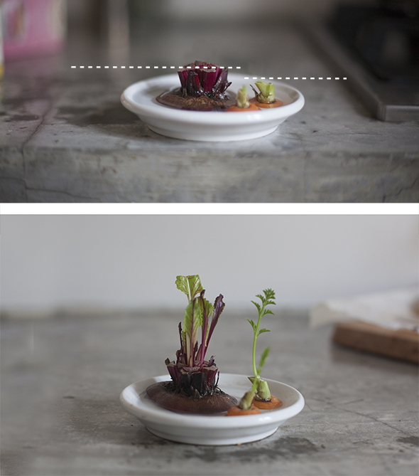

Man glaubt es kaum! Ein Experiment, was ich auch für ungeduldige Kinder lohnt! Man schneidet den oberen Teil einer Wurzel ( hier Rote Beete und Mohrrübe ) ab und stellt sie in ein bisschen Wasser. 2 Tage später sieht man schon, wie neue Blätter zwischen den abgeschnittenen Blättern herauswachsen.